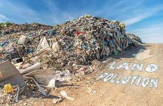

<html>
  <head>
    <meta name="viewport" content="width="device-width" intial-scale=1.0">
  </head>
</html>
<body style="background-color=#7FFFD4">
  <main>
    <header>
  <center><h1>Types of Pollution</h1></center>
  <nav>
    <ul style="text-align:center;font-size="20">
      <li style="display="inline-block;font-size:20 px;"> <a style="text-decoration:none;" href="index.html">About Pollution </a></li> |
      <li style="display="inline-block;font-size:20px;"> <a style="text-decoration:none;" href="airpollution.html">Air Pollution </a></li> |
      <li style="display="inline-block;font-size:20px;"> <a style="text-decoration:none;" href="landpollution.html">Land Pollution </a></li>
    </ul>
      </nav>
    </header>
    <section style="font-size:20px;">
      <p>
        Land pollution is the damage or degradation of the Earth's surface, mainly caused by human actions. It occurs when waste materials, chemicals, or harmful substances are improperly dumped onto the land.

One major cause of land pollution is the careless disposal of garbage. When waste is thrown away irresponsibly, it piles up in landfills or open spaces, harming the soil and the environment.
      </p>
      <p>
       Industrial activities also play a big role. Factories often release toxic waste, which seeps into the ground and stays there for many years, making the soil unsafe for plants, animals, and people.

In farming, the overuse of pesticides and fertilizers also damages the land. These chemicals reduce the soil’s natural fertility and can even poison nearby water sources. 
      </p>
      <p>
        Deforestation adds to land pollution too. Cutting down trees removes the land’s natural cover, leading to soil erosion and the loss of important nutrients.

Land pollution has serious effects on human health. Polluted soil can contaminate the food we eat and the water we drink, causing various diseases.
      </p>
      <p>
        Wildlife also suffers greatly. Animals lose their natural habitats and food sources, leading to a decline in biodiversity.

To reduce land pollution, recycling, composting, and proper waste management are very important. These actions help keep the land clean and healthy.

Protecting our land is essential. A clean environment ensures a better future for humans, animals, and the Earth itself.
      </p>

    <center>
      
        
    </center>
